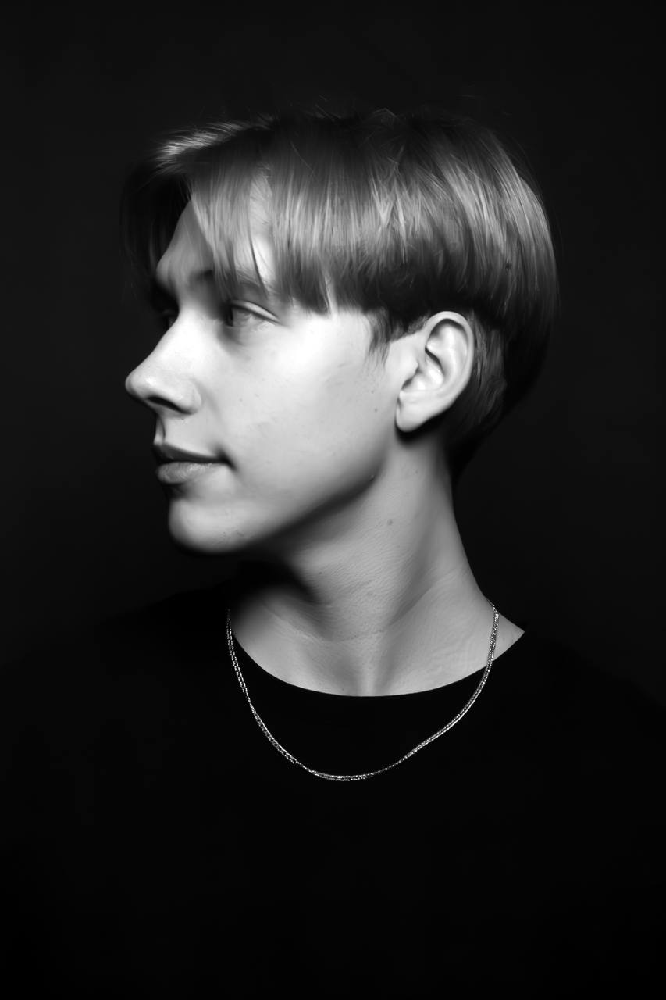
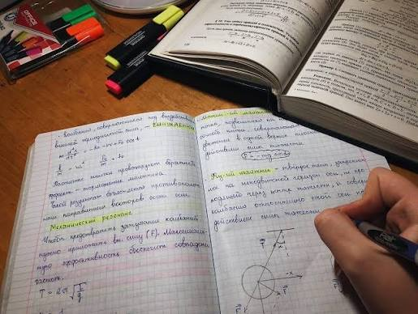
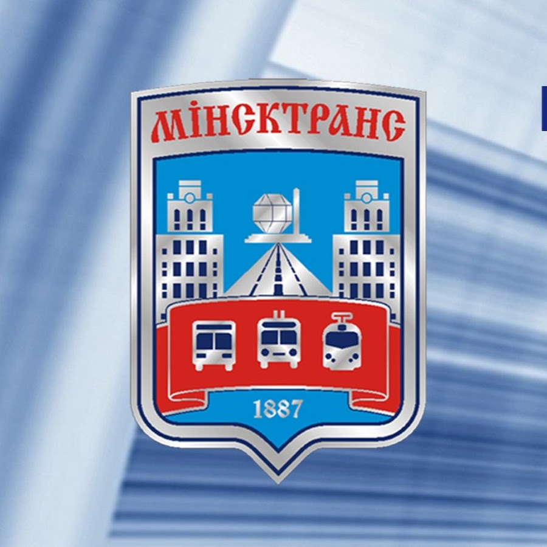

Всем привет! Меня зовут Денис. На данной странице я расскажу, как прошло мое лето. Для меня это было время контрастов: от ленивых теплых вечеров до спонтанных поездок и встреч с друзьями. Весь рассказ можно поделить на три части в соответствии с месяцами: июнь, июль и август. У каждого месяца была своя уникальная атмосфера и свои маленькие приключения. Начнем с самого первого и будем уделять внимание каждому из них. Надеюсь, вам будет интересно погрузиться в эти воспоминания вместе со мной!

Июнь выдался достаточно обычным, но в то же время полным переживаний и суеты. Первая половина месяца целиком прошла под знаком учебы: началась летняя экзаменационная сессия. Дни и ночи я проводил за учебниками, конспектами и бесконечным повторением материала, стараясь выложиться на максимум. К счастью, усердная подготовка принесла свои плоды: все экзамены были сданы на отличные оценки, а тяжелый груз ответственности наконец-то спал с плеч. Однако долгожданная свобода наступила не сразу — следом встал вопрос о прохождении производственной практики, которая должна была стать моим первым серьезным практическим опытом.
В июле начался новый и очень важный этап моего лета — практика, которая проходила в одной из государственных организаций и длилась три недели. Этот период стал для меня настоящим погружением в реальную профессиональную среду. За три недели плотной работы мне удалось не только детально ознакомиться с совершенно новыми программами и внутренними инструментами, но и прочувствовать настоящий ритм трудовой жизни. Это был отличный шанс проверить свои теоретические знания и навыки на практике, понять свои сильные стороны и определить, в каком направлении мне хочется развиваться дальше.

Август прошел еще более интересно, динамично и продуктивно. В этом году я решил сделать свой последний месяц лета необычным и попробовать себя в новом направлении — вступил в ряды студенческого отряда. Мой осознанный выбор пал на работу контролером. Это было совершенно новое для меня дело, которое требовало ответственности, внимательности и умения общаться с самыми разными людьми. Благодаря этому решению, мой август гармонично совместил в себе как долгожданный молодежный отдых в отличной компании единомышленников, так и реальную пользу — я получил ценный трудовой опыт, развил полезные навыки и провел время с максимальной отдачей. Летний сезон завершился на отличной ноте!